Host Plant Threats
Tasar food
plants mainly Terminalia arjuna (Arjun) and T. tomentosa (Asan)
are infested with different fungal diseases of the member Ascomycetes. In some
cases the affected plants show the symptoms, which are closely similar to
viral and bacterial diseases which is yet to be confirmed. Studies made with
regard to some fungal diseases of tasar food plants along with its symptom
otology, epidemiology and control measures are enlisted below:
i.
Powdery mildew:
It is a fungal disease occurring on the leaves of Arjun and
Asan. The causative agent of the disease is Phyllactinia terminleae.
The primary tasar food plants are attacked by mildew causing fungus and
develop striking symptoms on the ventral surface of leaf. The disease
symptoms appear during the month of July-August and maximum disease incidence
has been found during January. The disease may not be a serious problem in
bivoltine areas of tasar rearing but in the regions where third crop is the
major crop, rearing may be greatly affected if the disease is prevalent and
if the proper care for its control is not taken it may be spread in epidemic
form and may cause tremendous loss to rearing as the fungus greatly affects
both quality and yield of leaf.
|
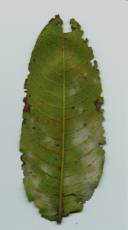
|
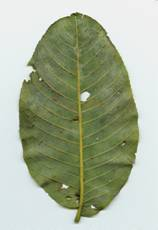
|
Symptoms:
Observations reveal that the infection to the healthy bushes
takes place during July-August but the
visible symptoms may not be seen until onset of winter season. However, if
the leaf is examined against sun rays the site of infection will appear as
pale greenish. Gradually, white powdery masses will appear initially in
patches and subsequently extending to the whole ventral surface of leaf. The
affected leaves gradually change their green colour. If infection has taken
place to tender leaves they fall down prematurely. With advancement of season
powdery mass is replaced by dot like structure which are in fact the fruiting
bodies called cleistothesia. Crop loss
is recorded to the tune of 25-30% in T. arjuna and 8-10% in T. tomentosa.
The disease spread by means of sexual spores termed
conidiophores which are formed in chains and are easily disbursed through
air. Fresh infection to host plants takes place through the germination of
sexual spores which are liberated through the rupture of cleistothesia during
rainy season. During the month of September to December the pathogen multiply
by the formation of conidia. The fruiting body formed on infested plant parts
fall on the soil serve the purpose of penetration of fungus. These
cleistothesia rupture during the rains to release the ascospores.
Management:
a.
Field Sanitation: As the disease penetrates through the ascospores formed on dead
plant parts, field sanitation is very important to control the disease.
Therefore, the affected leaves should be collected and burnt in order to
check the build up of inoculum in the field and primary infection to the
field.
b. Use of fungicides: In order to control further spread of the disease the spray of
fungicides has been found very effective. Depending upon the intensity of
infection 2-3 sprays of 0.03% Karathane or 0.2% Sulfex has been found
effective to contain the disease. This controls the disease to the tune of
70-75 per cent. The spray of fungicide
may be repeated at an interval of 15 days. However, the toxic effect of
fungicide remains effective for 8-9 days. As such the safe period for
brushing of silkworm is 10-12 days. The chemical spray should not to be done
as prophylactic measure as it involves an additional expenditure towards
spraying. As such the spraying should be done with the appearance of visible
symptoms.
c. Integrated Package of Management: Field sanitation cum
spray of chemicals has been found effective.
ii.
Leaf curl:
The cause of disease is yet to be established but work carried
out so far suggest that it is due to the deficiency of copper. Only leaf of T.
tomentosa are affected by leaf curl. It occurs during rainy season and
causes leaf loss to the tune of 15-20%.
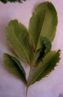
Symptoms:
Leaves show withered conditions during heavy rainy season.
Young and tender leaves soon after expansion from buds show crinkling. The
leaves exhibit a boat shaped form due to folding of leaf blade along the mid
rib. The venation pattern changes and shows a tendency of covering to the
apex of lamina. The tissues between the veinlets show wrinkling. Chlorosis of
leaves starts from margins as a result the tip and margin starts
drying/withering. Leaves show deep serration in between the veins become
brittle and gradually fall down.
Management:
Spray of 175 ppm copper sulphate solution / Spray of fungicides
having copper like Blitox 0.5% has been found effective for controlling the
disease.
iii. Leaf spot:
It is a fungal disease occurring on the leaves of T.
tomentosa. T. tomentosa which is the primary food plants of tasar
silkworm is attacked by leaf spot causing fungus known as Pestalotiopis
palmarum. The pathogen causes a leaf loss to
the tune of 13-15% directly. However, leaves become some brittle and yellow.
|
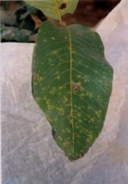
|
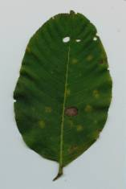
|
Symptoms:
Visible
symptom on T. tomentosa plant
may be seen during June-July. The lower surface of leaf show white patches of
fungal growth. Later on just above the point of infection, the upper surface
exhibits coffee brown spots. Infected leaves become yellow and brittle. Later
on leaves fall down. Leaves develop cottony fungus mass on lower surface of
leaves during July-August. The disease spread by means of conidia produced on
dark conidiophores. Conidia have 3-5 cells and ellipsoid to fucoids in shape,
which are disseminated through air. Fresh infection to next generation takes
place through germination of sexual spores produced in fruiting bodies. The
spores get entry through pores and ramify on the surface of host but the
haustoria penetrate through pores on leaf. During the season the asexual
spores viz conidia do the purpose of spread through air blow. The fruiting
bodies formed on infected plants fall to soil along with the dead leaves and
do over summering there.
Management:
a. Field sanitation: Field sanitation is
very important in order to check the spread of disease.
b. Use
of fungicides: In order to control the spread of disease, spray of fungicide
is recommended. Three spray of 0.5% Blitox or 0.5% Diathane M45 is effective
to check the germination of spores. However, fungicidal spray may not be used
as prophylactic measures due to cost factor.
Spray of fungicide may be done three times at an interval of 10 days.
The toxic effect of fungicides remains up to 10-12 days. As such, brushing of
worms may be done after 15 days of spray.
Chemical spray is not much economical as prophylactic measure. The
spraying may be scheduled with the appearance of symptoms.
c. Integrated
package of Management: Field sanitation cum chemical spray has
been found effective.
iv) Damping of
seedlings:
It is a
fungal disease attacking both T. arjuna and T. tomentosa.
Disease is caused by different genera belonging to class oomycetes viz
Basiodiophore, Sclerospores, Plasmopara, Peronospora etc.
Symptoms:
Appearance
of the disease is recognized by the black spot on the dorsal surface of
cotyledonary leaf as post emergence. Gradually the leaf and inter nodal
portions are also infected and seedlings wilt. Pathogenic body is endophytic
and asexual reproduction takes place through conidia.
Control measures:
Spraying
of fungicides like 0.25% Thiram / 0.2% Ceresan / 0.25% Captan effectively
check the disease.
v) Black nodal
girdling:
It is a
fungal disease attacking both T. arjuna and T. tomentosa during the month of September-October.
|
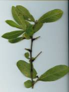
|
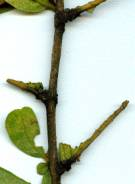
|
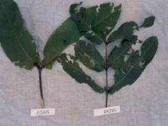
|
Symptoms:
Blackening
begins from the nectar glands and gradually spreading to lower petiole
region. Ultimately, the petiole and inter nodal region gets covered with
black sooty spores forming black girdle like appearance and hence its name.
The symptoms of blackening of glands are visible during moderate to low
temperature period of the season. By the winter season the whole leaf gets
covered with black sooty spores covering almost all leaf, which ultimately
gives a black rusty appearance. The disease is caused by Uredo species and
the disease is spread by means of Uredospore which are easily disbursed
through air and water.
Control measures:
A better
way to check the further spread of disease may be harvesting of affected
leaves and its burning. Spray of Bavistin 0.2% at 15 days interval has also
been found effective.
The
foregoing description of different pathogenic fungi of primary tasar food
plants give an idea that unlike other plants , these tasar food plants are
also affected by several pathogens.
Though some may not be of great commercial significance to tasar
culture, tasar food plants are
greatly liable to attract more pathogens in coming days. Though some
of the pathogens have been well identified and their controls are devised but
many more are yet to be identified. As such, the tree pathology forms an
important aspect of tasar culture along with other aspects.
Pests of tasar food plants and their management:
Several
pests cause quantitative and qualitative loss to Terminalia arjuna
(Arjun) and T. tomentosa (Asan) and all parts of tree at all stages of
growth. The losses due to attack of pests ultimately results in reduction of
foliage, growth and wood destruction. The major pests of tasar food plants
are gall insects, defoliating insects, stem borers and white ants.
i) Gall
insects:
Trioza
fletcheri Minor (Psyllidae:Hemiptera)- leaf
gall maker, Phylloplecta hirsuta
(Psyllidae:Hemiptera)- leaf roll gall, Megatrioza hirsuta
(Psyllidae:Hemiptera)-leaf roll gall or big gall and Cercoplastes
ceriferus (CoccidaeHemiptera)- shoot and stem gall maker cause gall
formation on T. arjuna and T. tomentosa. Of these T.
fletcheri is the most common, damaging both the tasar food plants.
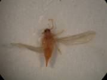
Symptoms:
The
galls are yellow in colour and looks like small pox on the surface of leaf. Gall infestation starts from April-May to
July-September with peak period of infestation in August-September. The affected leaves are not suitable for
tasar silkworm rearing and the leaf loss has been recorded to the tune of
10-20% in normal infestation while it is as high as 80-90% in severe cases.
Life cycle of the pest:
T.
fletcheri completes its life cycle within
17-23 days. The female generally lays 200-250 eggs in the sprouted leaves.
The eggs are yellowish in colour at the time of oviposition turn black within
24 hours. After 5-6 days the eggs
hatch out and after a couple of hours penetrate into the leaf tissues where
passes through five nymphal stages. Feeding by nymphal stages induces gall
formation. The final instar nymph, after completing its development emerges
from gall through a slit like opening within 15-20 days. There is 6-7
generations in a year.
Management:
Ø
Mechanical control through plucking
of tender leaves having egg masses and mature gall infected leaves is found
to be most convenient way of nipping the pest infestation.
Ø
Suitable execution of control
measure reduce the gall infestation very effectively. Consecutive three spray
of 0.09% Dimethoate at an interval of 10 days from March onwards has been
found to kill the freshly hatched nymhs and thereby reducing the number of
flies considerably in the subsequent generation.
Ø
Two important parasitoids of T. fletcheri viz. Trechnites secundus (Encyrtidae: Hymenoptera) and Aprostocelus niger (Eulophidae: Hymenoptera) have been identified as biocontrol
agents for control of gall insect. Further studies on bioecology of these
parasitoids and technique of mass multiplication are required to be taken up.
ii. Defoliating
insects:
Defoliating
insects are the most important group which cause maximum damage to the plant
leaves. Survey revealed that most
prominent defoliating insects are Notolophus antiqua, Anomala
blanchardi, Myllocerus viridanus and Tricliona picea.
a) Notolophus antiqua (Lymantiidae:Lepidoptera):
N.
antiqua females are rudimentary, pale green
in colour. The larvae feed on the leaves causing damage or complete
defoliation of tasar food plants. The
young larvae feed by rubbing of the leaves and such leaves exhibit as if devoid of chlorophyll. Larva
first damages the soft and succulent leaves and then migrates towards
complete leaves. Extent of damage is about 8-10% but in severe cases it may
go up to 35-40 per cent.
Symptoms:
The
larvae are voracious feeder. Cuts in leaves due to the feeding of hairy
caterpillars are the symptoms of its infestation. Generally occurrence of pest noticed in the
monsoon and peak period of infestation is reached in the month of
August-September and sporadic occurrence is noticed during April-December.
Generally, the mated females lay about 350-500 eggs on its pupation. Eggs are
whitish in colour. The larval period varies from 30-35 days. The head of
fully grown larva is brilliant vermilion in colour and the body is yellow
banded with white and adorned with black tipped tufts and bundle of black
colour hairs. The mature larva spins a web to form a silken cocoon consisting
of hairs of larval body and blackish dried excreta. The total life cycle is
completed within 40-48 days.
Management:
Ø
Mechanical method is one of the best
methods to control the defoliators in the initial stage itself. Manual
collection of egg masses, larvae/adults and using light traps to collect the
adults and kill them is commonly adopted.
Ø
Foliar spray of 0.09% Dimethoate
(Rogor) or 0.1% Nuvan or 0.03-0.09% Malathion (Dythian) at an interval of
10-15 days is effective.
Ø
Tricogramma chilonis has been identified
and used for control of the pest. Further studies are required to be
undertaken on this aspect.
b) Anomala blanchardi (Scarabeidae:Coleoptera):
A.
blanchardi (May-June beetle) is nocturnal in habit and adults
are foliage feeders. It is a dark brown to black insect having clubbed
antennae with six abdominal segments.
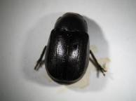
Symptoms:
Black
coloured beetles are found on tasar food plants during night hours and cuts
of leaves are present due to their feeding. Normally infestation has been
observed to the tune of 8-10% but it may go as high as 35-40% during heavy
infestation. Apart from this, the grubs attack roots of attack grasses, woody
plants and making them weak. The adult
starts appearing in May-June and continues till August. The peak period of
infestation is June. The females of A.
blanchardi lay eggs in the soil. Larva is 2.0-2.3 cm long, whitish and
segmented. The long axis is sharply curved thereby appearing C shaped. The
larvae over winters in the soil and pupation occurs in spring (May-June) and
hence known as May-June beetle.
Management:
Ø
Manual collection and
destruction of egg masses,
larvae/adults in the soil and soil application of neem cake @ 150 kg/ha.
Ø
Foliar spray of 0.09% Dimethoate was
also found effective against adults of A. blanchardi.
c) Myllocerus
viridanus (Curculionidae:Coleoptera):
The
adult Myllocerus viridanus are black with dense uniform, light green
scaling varying pale greenish and white voraciously feeds on leaves of Arjun and Asan throughout any time. Grubs
and pupae remain in the soil and feed on the secondary and tertiary
rootlets.
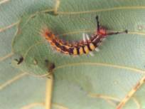
Symptoms:
Insects
feed on the petioles from the margin of the leaf. Generally crop loss is about 15-20 per
cent. The weevils usually appears in
the June after pre-monsoon showers till middle of October-November. Peak
period of infestation is July-September. The adult is 3.25 to 4.5 mm in length and 1.5 to 2.25 in
width. Adults are black and the heads intinged with yellow and metallic green
scale at the apex of rostrum. Tiny black or piceous, legs are with green
scaling. Total life cycle and other informations are yet to be studied.
Management:
Ø
Application of 0.07% Monocrotophos
is effective against adult beetles
Ø
Application of 2.5 kg (ai/ha)
Carbofuran or 3.5 kg (ai/ha) Phorate is effective against the grubs of Myllocerus
viridanus.
d. Tricliona picea (Chrysomelidae
:Coleoptera):
T. picea grubs and pupae remain in the soil and feeds on the secondary
and tertiary rootlets of primary food plants. The beetle is dark brown and
shiny and feed on the leaves of Arjun and Asan during day time.
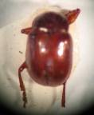
Symptoms:
Insects
often feeds on by cutting holes on the leaves. The extent of crop loss is about 5-7% in general but may go up
to 30-35% in case of severe infestation. Grubs also cause damage to the roots
of primary tasar food plants and thereby make the plants weak. The red beetle appear in the month of June
and continues till October. The peak infestation period is July-August. T.
picea is small dark brown and shining beetle. Male is 4.0 mm and female
is 5.1mm in length. They are diurnal feeders scrapping of the chlorophyll
leaving neatly appearance in the leaves. Eggs are white to creamish in colour
and o.24 mm in size which hatch within 6-7 days after oviposition. A female
lays 500-580 eggs in the soil and pass the winter in it. Larvae are
skeletonizers and adult insect consume tissue of leaf
Control measures:
Ø
Application of 0.07% Monocrotophos
is effective against adult beetles.
Ø
Application of 2.5 kg (ai/ha) Carbofuran or 3.5kg (ai/ha) Phorate
is effective against the grubs of T.
picea.
e. Crinorhinus nebulosus (Curculionidae:Coleoptera):
C. nebulosus is also found to attack the foliage of tasar food plants and
the larvae are hiding always in specially made green leaf cases.
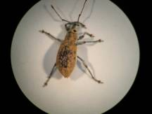
Symptom:
Adult
Weevil prefer to nibble the petiole of mature /semi-mature leaves. Generally crop loss is about 5-10 per cent.
The grubs feed on the secondary/tertiary rootlets of tasar food plants as a
result wilting of plant may occur. Adult appears in July and peak period of
infestation is August-September. Total
life cycle of this weevil is 30-45 days and there are 5-6 generations in a
year.
Management:
Ø
Application of 0.07 Monocrotophos is
effective against adult beetles.
Ø
Application of 2.5kg (ai/ha)
Carbofuran or 3.5kg (ai/ha) Phorate is effective against the grubs of C. nebulossus.
iii Stem borers:
A groups
of insects mostly coleopterans cause damage to the stem and bark of the
primary tasar food plants. They make tunnels inside the stem (branches and trunks)
of the tree which leads to the death of plants.
Symptoms:
The bark
eater makes black colour gallery with the help of excreta. It is very much
visible on the stem. The larvae reside inside the gallery and eats the bark.
Common stem borers are listed below:
|
i)
|
Sphenoptera koenbierensis
|
Buprestidae
|
|
ii)
|
S. cupriventris
|
Buprestidae
|
|
iii)
|
Psiloptera fastuosa
|
Buprestidae
|
|
iv)
|
Aeoloesthes holosericea
|
Cerambacidae
|
Extent of damage is found much higher in Asan as
compared to Arjun. Generally loss is about 5-8% to leaves, however under
severe condition loss may go up to 15-20 per cent. The adult beetle is emerged from its over wintering
sites and lays eggs on the bark or on the stem. The larvae hatch within 5-6
days and it bore into the stem leaving a resin or gummy secretion at its
entrance point. They are tiny slender grubs with greatly enlarged prothoracic
segment. The adult emerged through oblong tunnels made by the final instar
grubs. If the attack is severe the plants were found to die in some cases. At
least one generation have been recorded during a year with the peak period of
infestation during February-June. The
adults are metallic green and lustrous which are good fibre. The adults
generally feed on the secondary host plants such as Char, Dhaura. The male
varies 6.9 to 7.5 mm and female varies from 9.5 to 9.9 mm in length and the
width of the adults varies from 2.05 to 3.2 mm.
Management:
Ø
Since stem borers are being inside
the stem, it requires to plug the holes with pesticides soaked cotton.
Ø
Cotton soaked with the prepared
solution of Phosphomidan 0.05% or Monocrotophos 0.07% should be inserted in
the holes made by borer inside the stem.
iv White ants:
Termites, commonly known as white
ants, causes severe damage to seedlings, saplings and other stages of tasar food plants. They are
soil dwellers feeding on wood / woody portion of plants. The common termites damaging
tasar food plants are Termes obesus
and Odontotermis assimuthi. Termites cause severe damage to woody
portion of tasar food plants. Termites
are soft bodies insects of medium size and pale whitish to light or dark
brown colour. They are social insects living together in organized
communities. Colonies are based on king and queen, soldiers and workers.
Control:
Ø
Termitorium should be unearthed and
destroyed by pouring crude oil emulsion or Dursban solution 0.065 per cent.
Pest incidence and damage caused by
them may vary from place to place, as the observations discussed here are
based on the studies carried out at CTR&TI, Ranchi. Since tasar food plants Arjun and Asan are widely
distributed in nature and extensively planted in tasar growing areas, an
extensive survey is required to study the severity of various pests. As T.
tomentosa and T. arjuna leaves
are primary food plants of tasar silkworm, application of any insecticides
may be done judiciously to avoid the adverse effect of chemical on
environment. Thus alternative technique like use of biocontrol agent may be
selected out to explore the possibilities of controlling the pest species.
Back
|